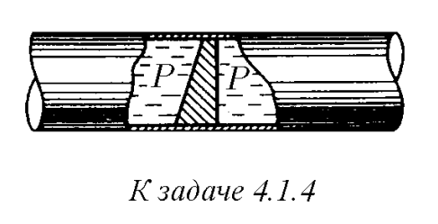
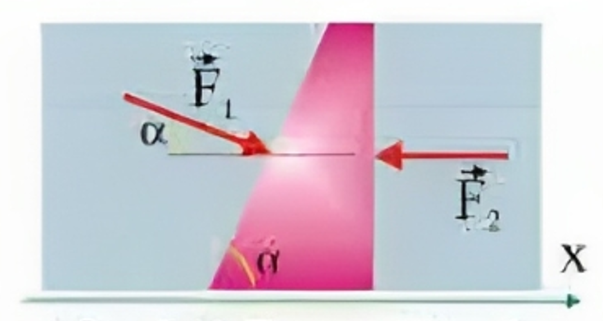

Условие:
\(4.1.4.\) В трубе находится поршень, продольное сечение которого показано на рисунке. Давление жидкости с обеих сторон поршня одинаково. Находится ли поршень в равновесии?

Решение:

1. Давление в трубе одинаково, а площади по- верхностей поршня, соприкасающихся с водой ные, тогда из уравнения $р = F/S$, как бы следует, что поршень должен двигаться. Однако это не так. Проанализируем уравнение второго закона Ньютона
2. Поршень. расположенный в трубе. обладает одной степенью свободы, поэтому достаточно проанализировать только проекцию уравнения $(1)$ на ось $х$
векторы сил в данном случае перпендикулярны соответствующим поверхностям поршня, поэтому: